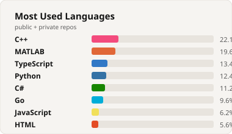

Bahaa
Mohammad
Systems & research software from Iowa City — simulation, lab pipelines, and shipping systems.
GitHub stats

Built
Selected projects — full writeups live on the site.
Systems & research software from Iowa City — simulation, lab pipelines, and shipping systems.

Selected projects — full writeups live on the site.